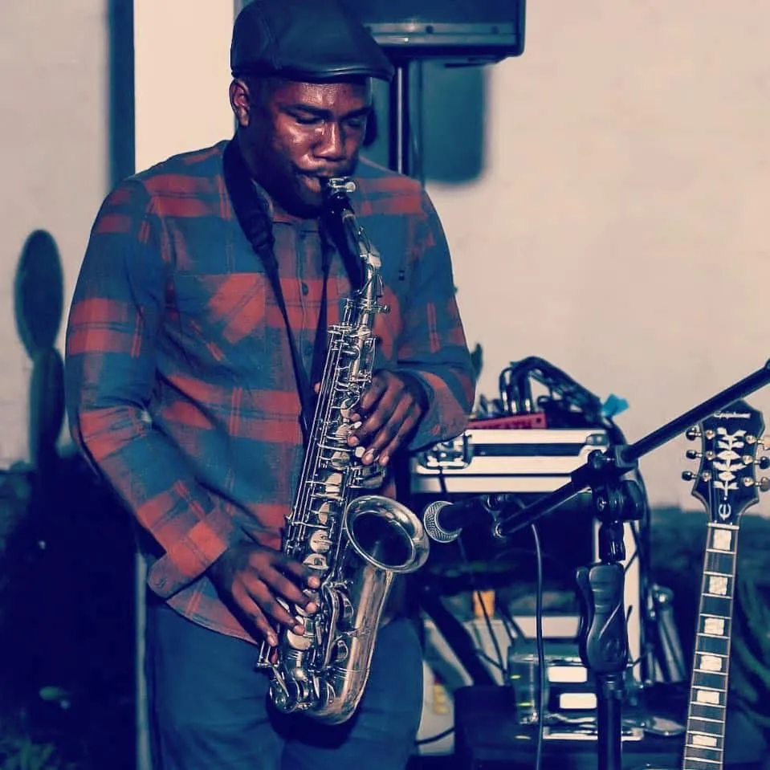

Haz de tu boda un evento inolvidable con la música en vivo de Joel. Ofrezco un repertorio variado y adaptado a tus gustos, creando el ambiente perfecto para tu día especial.
Desde la ceremonia hasta el banquete, la música en vivo añade un toque de elegancia y emoción que tus invitados recordarán.

Estoy disponible para discutir tus necesidades y personalizar la experiencia musical de tu boda.
Teléfono: +593 959285913
Email: redtipgalapagos@hotmail.com